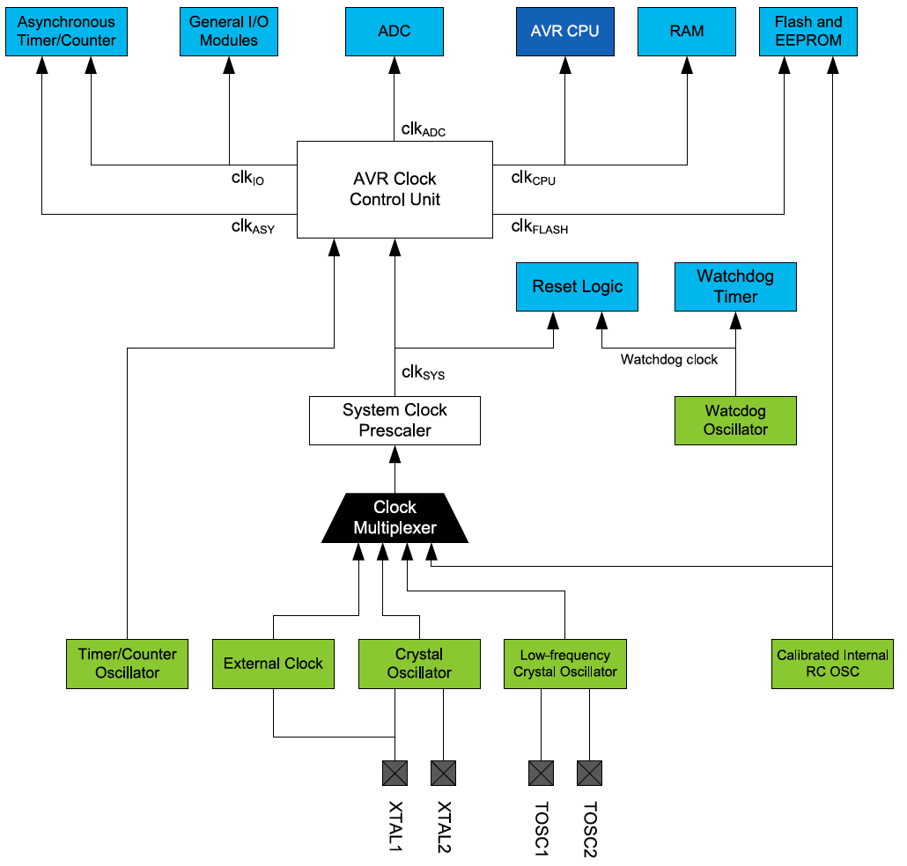

Microcontroller's clock system
Organization: A microcontroller can have different clock sources, such as an external clock or a crystal oscillator, and serveral components, such as the processor and peripheral devices, of a microcontroller would require clocks. Clock system architecture is Clock multiplexer (select clock source) -> prescaled (software, output system clock clk-sys) ->AVR Clock control unit -> different sub clock source for those components. The following picture is a clock system in the Atmega328p chip.[1]

* The clki/o and clkcpu have the same clock speed.
Why independent ADC clock domain? It allows the ADC to work while halting the clocks for CPU and I/O clocks. Halting other clocks reduces the noise and improve ADC accuracy.
Terms
- start-up time: a time period before releasing the reset
- time-out delay: a ...
- BOD:
- clock domain: an independent clock source supplied for a component in the microcontroller, such as clk-io and clk-cpu.